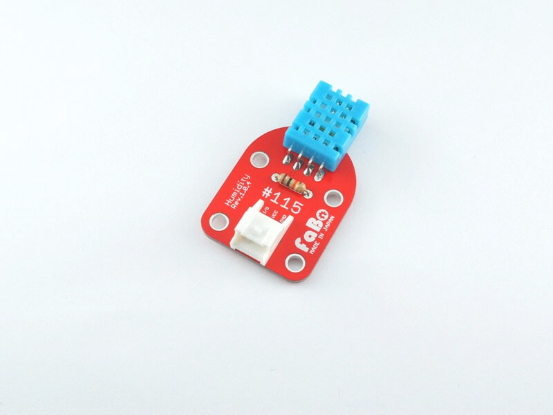
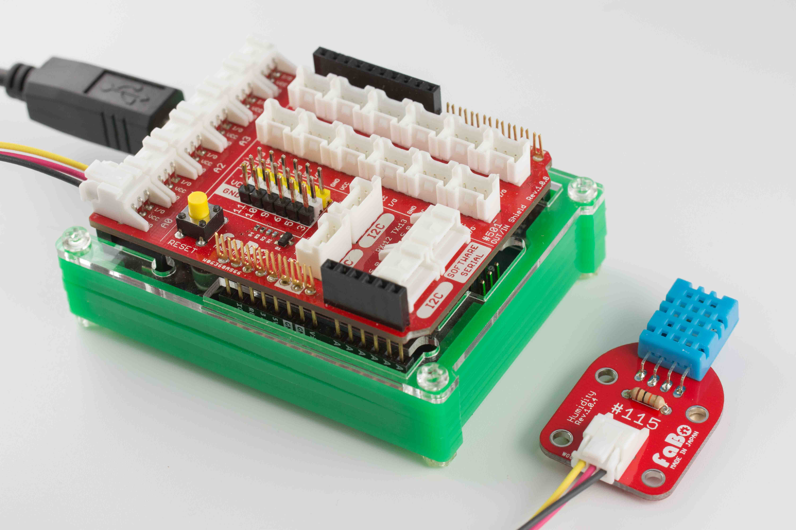
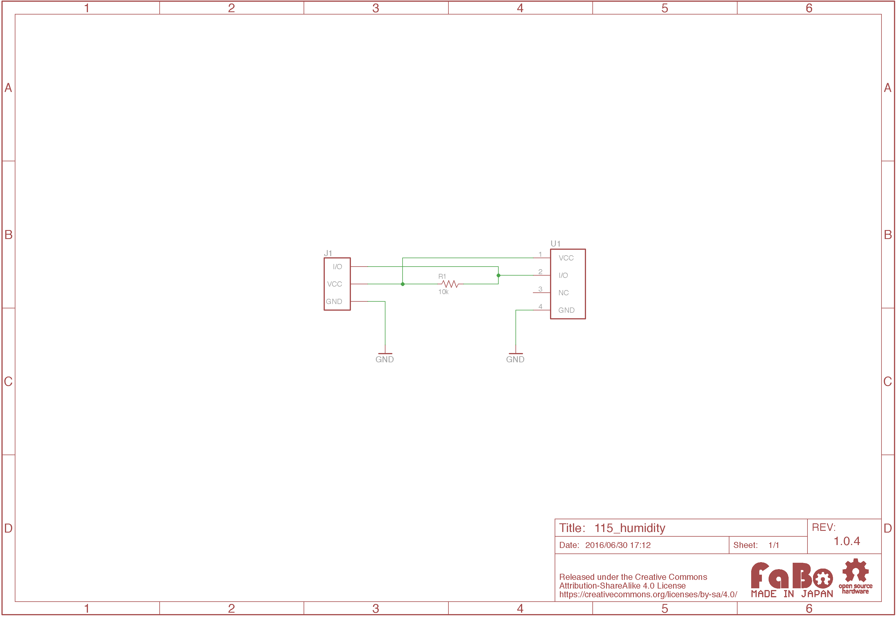
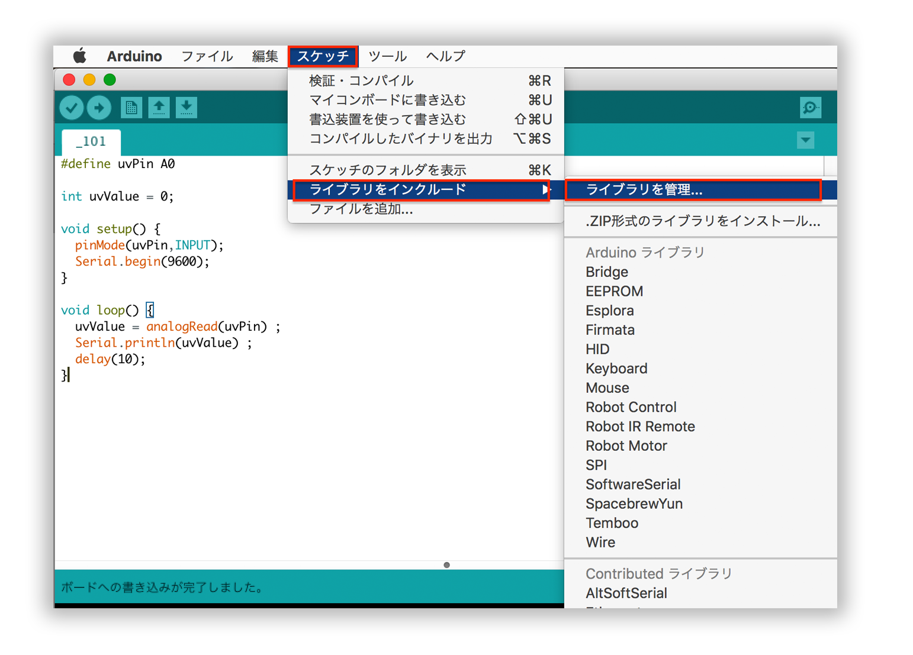
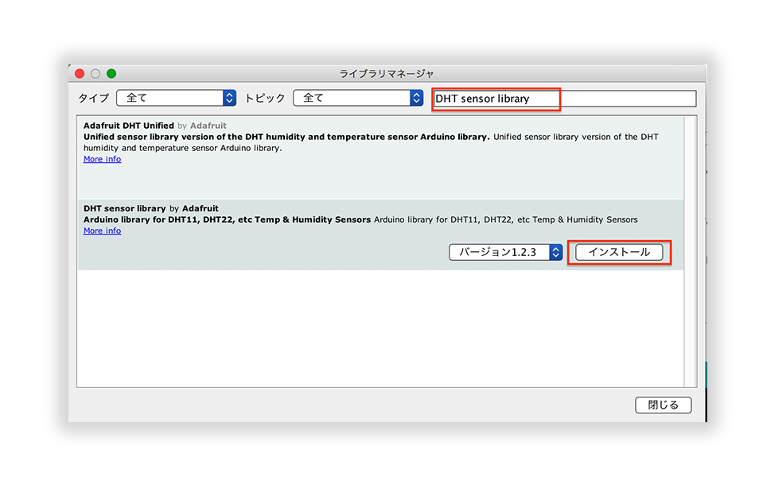

#115 Humidity Brick

Overview
湿度センサーモジュールを使用したBrickです。
温度、湿度の情報を取得することができます。
接続
アナログコネクタ(A0〜A5)のいずれかに接続します。

Parts Specification
| Document |
|---|
| DHT11 |
回路図

ソースコード
A0コネクタに接続して、湿度を計測するサンプルになります。
このサンプルコードでは外部ライブラリを使用します。


ライブラリ名：「DHT sensor library」
1 2 3 4 5 6 7 8 9 10 11 12 13 14 15 16 17 18 19 20 21 22 | |
構成Parts
- 湿温度センサモジュールDHT11
GitHub
- https://github.com/FaBoPlatform/FaBo/tree/master/115_humidity